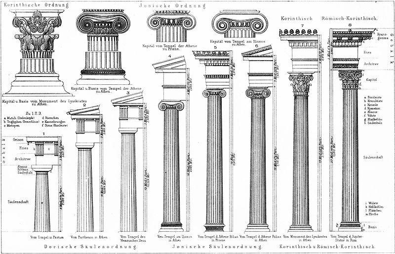

Arhitectura Greciei Antice
Arhitectura grecească se caracterizează prin sistemul constructiv trilitic, alcătuit din două elemente verticale peste care se sprijină unul orizontal. Grecii au folosit materiale variate precum lemnul, piatra, calcarul sau marmura cu granulație fină provenită din carierele de la Paros sau Pentelic.
Fundațiile erau realizate din blocuri de piatră, iar zidurile erau construite din blocuri prismatice cu fețele perfect plane. Acestea erau așezate fără mortar, fiind fixate prin propria greutate și prin sisteme discrete de agrafe metalice care asigurau stabilitatea construcției.
Arhitectura greacă s-a dezvoltat în trei stiluri importante: doric, ionic și corintic.
Stilul doric se caracterizează prin forme simple și puternice, o expresie de stabilitate și echilibru. Coloanele sunt robuste, iar capitelul lor este simplu. Acest stil a fost întâlnit mai ales în Grecia continentală și în sudul Italiei.
Stilul ionic este mai elegant și mai decorativ. Coloanele sunt subțiri, iar capitelul este ornamentat cu volute. Acest stil a apărut în regiunile de pe litoralul Asiei Mici și pe insulele din Marea Egee.
Stilul corintic este cel mai decorat dintre toate. Capitelul este bogat ornamentat cu frunze de acant și oferă construcțiilor un aspect rafinat.
Coloana era un element esențial al arhitecturii grecești. Inițial era realizată dintr-un singur bloc de piatră, dar mai târziu a fost construită din tamburi suprapuși pentru a ușura transportul și montarea.

Coloană în stil doric